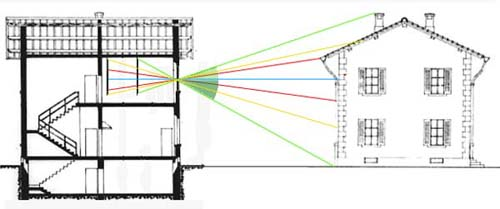
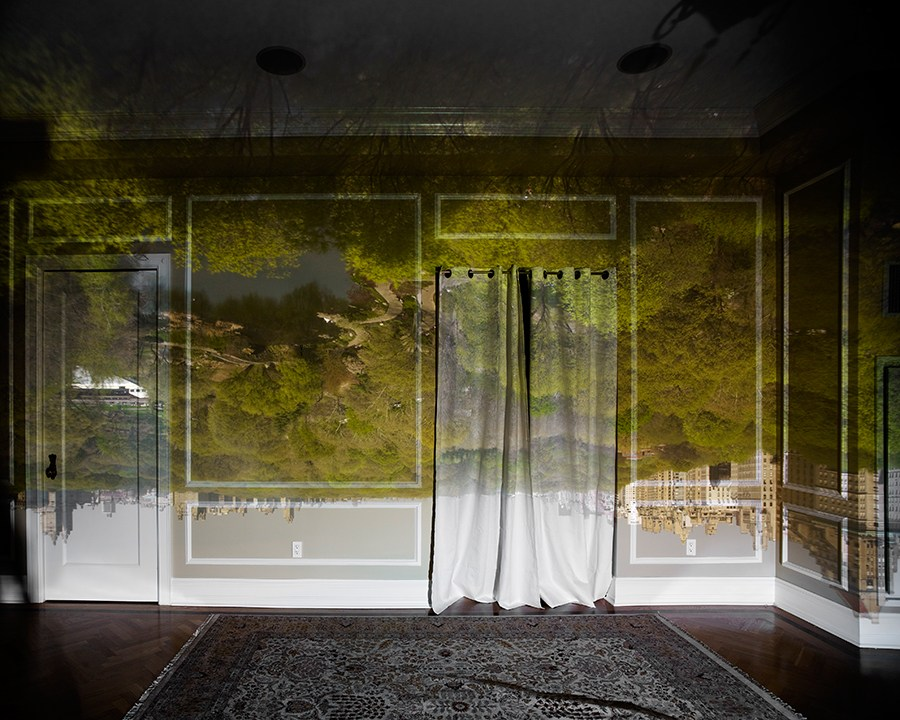

Obiettivi
- Spiegare come un piccolo foro seleziona i raggi.
- Distinguere camera stenopeica e foro posto davanti all’occhio.
- Collegare diametro, sfocatura, luminosità e diffrazione.
- Interpretare con cautela il miglioramento visivo con il foro.
Che cos’è un foro stenopeico?
Livello intuitivo: È una piccola apertura in uno schermo opaco. Lo schermo blocca la maggior parte della luce e il foro lascia passare fasci stretti. Può essere il foro di una camera senza lente oppure un’apertura posta davanti all’occhio.
Per essere maggiormente rigorosi: Davanti all’occhio, il foro limita l’apertura del fascio che partecipa alla formazione dell’immagine. Riduce molti cerchi di sfocatura e aumenta la profondità di fuoco. Non aggiunge il potere di una lente correttiva e non elimina l’ametropia. Il suo effetto dipende da dimensione, centratura, distanza e illuminazione.
Camera stenopeica
Come forma l’immagine senza una lente?
Livello intuitivo: Il piccolo foro fa passare fasci stretti provenienti da punti diversi. I raggi dalla parte alta dell’oggetto raggiungono la parte bassa dello schermo. Si forma così un’immagine invertita.
Per essere maggiormente rigorosi: Non si ha focalizzazione per rifrazione. Ogni apertura finita produce una macchia geometrica, a cui si aggiunge la diffrazione. Dimensione del foro, distanza dello schermo e distanza dell’oggetto determinano la qualità dell’immagine.

Il compromesso sul diametro
Perché un foro più piccolo non è sempre migliore?
Livello intuitivo: All’inizio ridurre il foro rende l’immagine più precisa. Se lo riduciamo troppo, l’immagine diventa scura e la diffrazione allarga i dettagli.
Per essere maggiormente rigorosi: La sfocatura geometrica diminuisce con il diametro, mentre la scala angolare diffrattiva cresce al diminuirlo. Per un’apertura circolare ideale:
Cosa Vuol Dire?
Livello intuitivo: Dimezzare il foro raddoppia la scala angolare della macchia di diffrazione. Se passa luce di lunghezza d’onda maggiore, la macchia si allarga.
Per essere maggiormente rigorosi: è il raggio angolare del primo minimo di Airy, in radianti. e devono essere nella stessa unità. Si assume un’apertura libera, circolare, uniformemente illuminata e un regime diffrattivo appropriato. La formula non dà da sola il diametro ottimale per ogni occhio o ogni camera.

Test con il foro stenopeico davanti all’occhio
Che cosa osserviamo?
Livello intuitivo: Si confronta la capacità di leggere una mira senza foro e attraverso il foro, mantenendo condizioni di prova controllate. Se il dettaglio diventa più leggibile, una parte della perdita di nitidezza può dipendere dalla sfocatura ottica.
Per essere maggiormente rigorosi: Il confronto va interpretato dal professionista, di solito valutando un occhio alla volta e controllando centratura e illuminazione. Il foro può ridurre l’effetto di defocus e di alcune aberrazioni, ma fa diminuire la luce e può limitare il campo. Non è equivalente a una refrazione completa.
Se migliora, che cosa significa?
Livello intuitivo: Il miglioramento suggerisce che selezionare un fascio più stretto aiuta. Una correzione ottica appropriata potrebbe quindi recuperare una parte della qualità dell’immagine.
Per essere maggiormente rigorosi: Il risultato non dimostra da solo che tutta la riduzione visiva sia refrattiva. Possono coesistere cause ottiche e altre condizioni oculari. Se non migliora, non possiamo identificare una patologia specifica: foro troppo piccolo, scarsa luce, decentramento e altri fattori possono influenzare la prova.
Occhiali con fori stenopeici
Livello intuitivo: Al posto delle lenti trasparenti hanno schermi con molti piccoli fori. Possono rendere alcuni dettagli temporaneamente più nitidi grazie allo stesso effetto di selezione dei raggi.
Per essere maggiormente rigorosi: Possono ridurre luminosità e campo utile, produrre immagini multiple o rendere meno agevole la visione binoculare. Non sostituiscono gli occhiali correttivi prescritti e non sono adatti a compiti che richiedono campo visivo ampio e affidabile, come guidare.